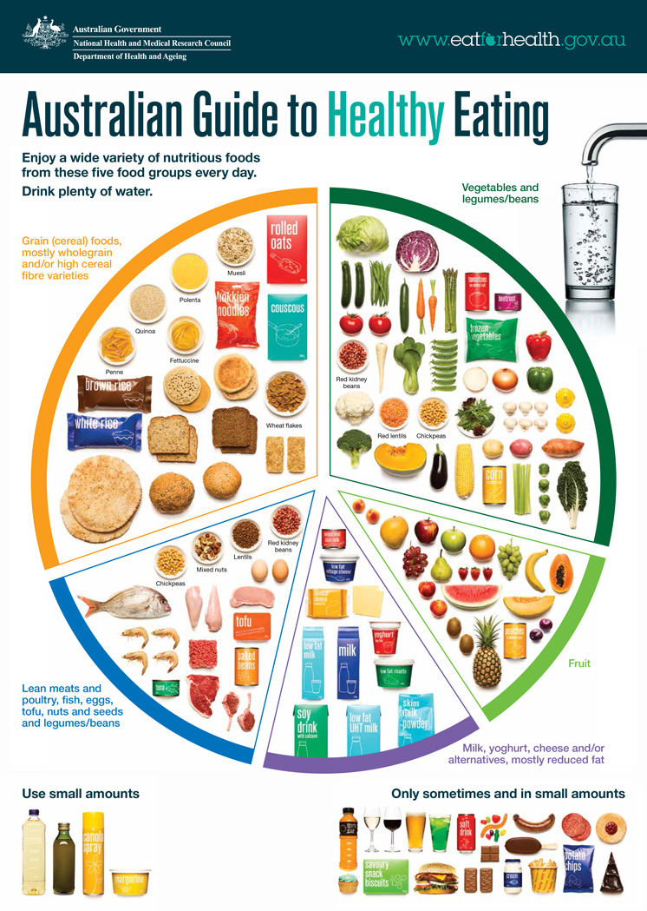

Balanced meals
What are balanced meals?
A balanced diet gives your body the nutrients it needs to function correctly. Without balanced nutrition, your body is more prone to disease, infection, fatigue, and low performance.
What to eat for a balanced diet
A healthy, balanced diet will usually include the following nutrients:
- vitamins, minerals, and antioxidants
- carbohydrates, including starches and fiber
- protein
- healthy fats
A balanced diet will include a variety of foods from the following groups:
- fruits
- vegetables
- grains
- dairy
- protein foods
You should mostly avoid highly processed foods, as they are prone to having decreased nutrients and vitamins, while having extra sugar and salt.
- Fruits
- Fruits are extremely nutrient dense. They can be sweet, while being fresh and good for the body. The sugar in fruits are natural, and fruits also provide fiber and other nutrients.
- Vegetables
- Vegetables are a key source of essential vitamins and minerals. Leafy greens such as spinach and broccoli are great source of many nutrients.
- Grains
- Grains such as bread and rice have limited nutritional value, but provide many carbohydrates. They should be eaten less, but are still important. Whole grain products include the entire grain (the outside shell), which provides additional vitamins, minerals and fiber, which are healthier.
- Proteins
- Meats are primary sources of protein, which are essential for many things in the body. They can be substituted with beans, nuts or soy products, which still provide lots of protein, though less dense.
- Dairy
- Dairy products provide nutrients, including protein, calcium and vitamin D which are essential to bodily functions. They also contain fat, which can increase your energy levels, but too much fat can increase calories above what the body needs and may lead to weight gain.

Australian guide to healthy eating
The Australian guide to healthy eating refers to the ideal way of eating nutritiously through mainly fresh food. The information is categorised using a pie chart with sectors that represent each food group. The size of the sector represents the ratio of how much you should eat. The 5 main food groups are carbohydrates, vegetables, fruit, dairy, and protein. Out of the average person’s entire diet, around 35% of it should be carbohydrates, 30% should be vegetables, 10% should be fruit, 10% should be dairy, and 15% should be protein.
Carbohydrates include:
- bread
- cereal
- rice
- muffins
- oats
- weet-bix
- muesli
- quinoa
- polenta
- pasta
- noodles
- pancakes
Vegetables include:
- lettuce
- cabbage
- cucumber
- tomato
- carrot
- onion
- broccoli
- capsicum
- spring
- onion
- garlic
- spinach
- potatoes
Fruits include:
- apples
- pears
- oranges
- bananas
- grapes
- watermelon
- mango
- berries
Dairy includes:
- milk
- cheese
- butter
- yoghurt
- cream
Protein includes:
- seafood
- meat
- eggs
- nuts
- tofu
- beans
- seeds
- poultry
The Australian Guide to Healthy Eating (AGHE) suggests for the following to be used in small amounts: vegetable oil, olive oil, canola oil, and margarine. The general rule for food that is to be consumed only sometimes and in small amounts includes highly-processed savoury foods as well as all confectionery and beverages.
Conclusion
In general, eat plenty of fresh plant based, and limit intake of processed foods.
Citations
- Cara Rosenbloom, The only five things your kid needs to know about food, Today’s Parent (March 8, 2016). Viewed Tue 09 Aug 2022
- Healthline, Balanced Diet, healthline (July 19, 2017). Viewed Tue 09 Aug 2022